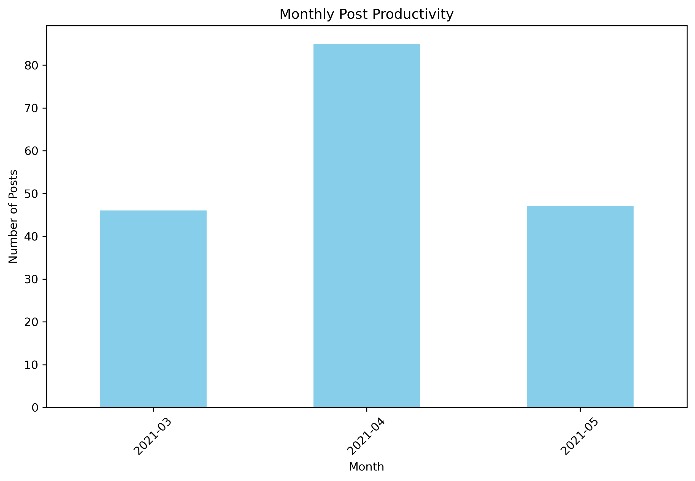
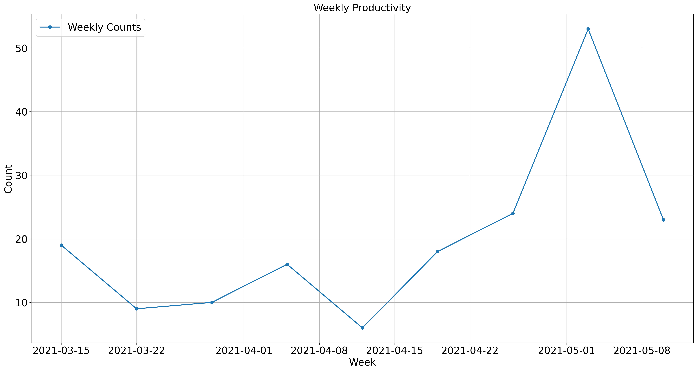

P06-3 Processing timestamp#
我們可以認得20210509或Sun May 9 10:52:43 2021或2021-05-09 10:52:43是一個時間，但對程式而言，這就是一個字串。
如果我們希望可以從中取出年、月、週、日、Weekday或做時間的運算（例如把時間加一週），然後來觀察時間上的分佈特徵（例如觀察所有貼文在時間軸上的生產力曲線），那就得把這些字串轉為時間型態，而Python的時間型態是datetime。
通常就是兩個步驟，分別是strptime()和strftime()。前者將文字轉為時間物件、後者將時間物件轉為指定的字串格式。而轉換的方法並非程式會自動轉，而是你要告訴程式，你這個字串的格式為何？或者反過來，是告訴程式，你要轉為什麼格式的字串。例如Sun May 9 10:52:43 2021如果要正確地轉為時間格式的話，應該是用以下格式轉：
date_string = "Sun May 9 10:52:43 2021"
date_object = datetime.strptime(date_string, "%a %b %d %H:%M:%S %Y")
上述程式碼中%a %b %d %H:%M:%S %Y是格式字符串，它告訴strptime函數如何解釋日期時間字符串中的每個部分。具體來說：
%a：解析星期幾的縮寫（例如 “Sun”）。%b：解析月份的縮寫（例如 “May”）。%d：解析日期。%H：解析小時（24小時制）。%M：解析分鐘。%S：解析秒。%Y：解析完整四位數的年份。
你可以從這個Python Doc的strftime() and strptime() Behavior這一節找到相關資訊。
Loading data#
Testing picle data download from P4CSS/PSS
# via colab
"""
import pickle
!wget https://github.com/P4CSS/PSS/raw/master/data/pttpost_20210509_n178.dat -O pttpost_20210509_n178.dat
with open("pttpost_20210509_n178.dat", "rb") as fin:
all_post = pickle.load(fin)
"""
'\nimport pickle\n!wget https://github.com/P4CSS/PSS/raw/master/data/pttpost_20210509_n178.dat -O pttpost_20210509_n178.dat\nwith open("pttpost_20210509_n178.dat", "rb") as fin:\n all_post = pickle.load(fin)\n'
import pickle
with open("../AS/data/pttpost_20210509_n178.dat", "rb") as fin:
all_post = pickle.load(fin)
---------------------------------------------------------------------------
FileNotFoundError Traceback (most recent call last)
Input In [2], in <cell line: 2>()
1 import pickle
----> 2 with open("../AS/data/pttpost_20210509_n178.dat", "rb") as fin:
3 all_post = pickle.load(fin)
FileNotFoundError: [Errno 2] No such file or directory: '../AS/data/pttpost_20210509_n178.dat'
post_df#
Processing
Convert list-of-dict to dataframe
Drop non-trivial-value column
comments
import pandas as pd
all_post
post_df = pd.DataFrame(all_post).drop(columns=["comments"])
post_df.head()
# comment_df = pd.DataFrame(all_post)[["plink", "comments"]].explode("comments")
| author | authorid | nickname | link | title | timestamp | content | |
|---|---|---|---|---|---|---|---|
| 0 | s72005ming (QQ) | s72005ming | https://www.ptt.cc/bbs/Gossiping/M.1620528765.... | [問卦] 美國會研究因武漢肺炎死亡的人種嗎？ | Sun May 9 10:52:43 2021 | 美國是民族大熔爐\n\n全世界各種人種都有\n\n但是依照各個人種做研究又有歧視的問題\n\... | |
| 1 | cka (CK) | cka | CK | https://www.ptt.cc/bbs/Gossiping/M.1620484638.... | Re: [爆卦] 大阪肺炎死亡率超越印度啦！！ | Sat May 8 22:37:16 2021 | 簡單講就是經濟跟死亡二選一的問題\n\n如果你全部的人都關在家不用上班\n經濟停止活動\n是... |
| 2 | cpblgu (《善良溫柔》的心愛) | cpblgu | 《善良溫柔》的心愛 | https://www.ptt.cc/bbs/Gossiping/M.1620481036.... | Re: [爆卦] 大阪肺炎死亡率超越印度啦！！ | Sat May 8 21:37:14 2021 | 這就是自由過了頭\n\n日本就是太快西化\n\n才犯了西方世界的飮毒\n\n\n要是日本還遺... |
| 3 | Dumbbbb (ㄏㄏ) | Dumbbbb | ㄏㄏ | https://www.ptt.cc/bbs/Gossiping/M.1620479086.... | [爆卦] 大阪肺炎死亡率超越印度啦！！ | Sat May 8 21:04:44 2021 | 先附上新聞aign=none\n\n根據數據統計\n\n大阪1百萬人/19.6人死亡\n印度... |
| 4 | leoyuan (糜爛生活該結束了) | leoyuan | 糜爛生活該結束了 | https://www.ptt.cc/bbs/Gossiping/M.1620478128.... | Re: [爆卦] 昨天武漢肺炎AZ疫苗將近萬人施打 | Sat May 8 20:48:46 2021 | 想居家檢疫後來去打疫苗，想說大家都不打那別浪費了。\n\n結果台北馬偕預約全滿，其他醫院隨便... |
Convert timestamp#
post_df['timestamp'] = pd.to_datetime(post_df['timestamp'], format='%a %b %d %H:%M:%S %Y')
display(post_df.dtypes)
post_df.head()
author object
authorid object
nickname object
link object
title object
timestamp datetime64[ns]
content object
year int64
month int64
weekday object
num_weekday int64
dtype: object
| author | authorid | nickname | link | title | timestamp | content | year | month | weekday | num_weekday | |
|---|---|---|---|---|---|---|---|---|---|---|---|
| 0 | s72005ming (QQ) | s72005ming | https://www.ptt.cc/bbs/Gossiping/M.1620528765.... | [問卦] 美國會研究因武漢肺炎死亡的人種嗎？ | 2021-05-09 10:52:43 | 美國是民族大熔爐\n\n全世界各種人種都有\n\n但是依照各個人種做研究又有歧視的問題\n\... | 2021 | 5 | Sunday | 7 | |
| 1 | cka (CK) | cka | CK | https://www.ptt.cc/bbs/Gossiping/M.1620484638.... | Re: [爆卦] 大阪肺炎死亡率超越印度啦！！ | 2021-05-08 22:37:16 | 簡單講就是經濟跟死亡二選一的問題\n\n如果你全部的人都關在家不用上班\n經濟停止活動\n是... | 2021 | 5 | Saturday | 6 |
| 2 | cpblgu (《善良溫柔》的心愛) | cpblgu | 《善良溫柔》的心愛 | https://www.ptt.cc/bbs/Gossiping/M.1620481036.... | Re: [爆卦] 大阪肺炎死亡率超越印度啦！！ | 2021-05-08 21:37:14 | 這就是自由過了頭\n\n日本就是太快西化\n\n才犯了西方世界的飮毒\n\n\n要是日本還遺... | 2021 | 5 | Saturday | 6 |
| 3 | Dumbbbb (ㄏㄏ) | Dumbbbb | ㄏㄏ | https://www.ptt.cc/bbs/Gossiping/M.1620479086.... | [爆卦] 大阪肺炎死亡率超越印度啦！！ | 2021-05-08 21:04:44 | 先附上新聞aign=none\n\n根據數據統計\n\n大阪1百萬人/19.6人死亡\n印度... | 2021 | 5 | Saturday | 6 |
| 4 | leoyuan (糜爛生活該結束了) | leoyuan | 糜爛生活該結束了 | https://www.ptt.cc/bbs/Gossiping/M.1620478128.... | Re: [爆卦] 昨天武漢肺炎AZ疫苗將近萬人施打 | 2021-05-08 20:48:46 | 想居家檢疫後來去打疫苗，想說大家都不打那別浪費了。\n\n結果台北馬偕預約全滿，其他醫院隨便... | 2021 | 5 | Saturday | 6 |
Retrieve time features#
post_df['year'] = post_df['timestamp'].dt.year
post_df['month'] = post_df['timestamp'].dt.month
post_df['weekday'] = post_df['timestamp'].dt.strftime('%A')
post_df['num_weekday'] = post_df['timestamp'].dt.weekday + 1
post_df.head()
| author | authorid | nickname | link | title | timestamp | content | year | month | weekday | num_weekday | |
|---|---|---|---|---|---|---|---|---|---|---|---|
| 0 | s72005ming (QQ) | s72005ming | https://www.ptt.cc/bbs/Gossiping/M.1620528765.... | [問卦] 美國會研究因武漢肺炎死亡的人種嗎？ | 2021-05-09 10:52:43 | 美國是民族大熔爐\n\n全世界各種人種都有\n\n但是依照各個人種做研究又有歧視的問題\n\... | 2021 | 5 | Sunday | 7 | |
| 1 | cka (CK) | cka | CK | https://www.ptt.cc/bbs/Gossiping/M.1620484638.... | Re: [爆卦] 大阪肺炎死亡率超越印度啦！！ | 2021-05-08 22:37:16 | 簡單講就是經濟跟死亡二選一的問題\n\n如果你全部的人都關在家不用上班\n經濟停止活動\n是... | 2021 | 5 | Saturday | 6 |
| 2 | cpblgu (《善良溫柔》的心愛) | cpblgu | 《善良溫柔》的心愛 | https://www.ptt.cc/bbs/Gossiping/M.1620481036.... | Re: [爆卦] 大阪肺炎死亡率超越印度啦！！ | 2021-05-08 21:37:14 | 這就是自由過了頭\n\n日本就是太快西化\n\n才犯了西方世界的飮毒\n\n\n要是日本還遺... | 2021 | 5 | Saturday | 6 |
| 3 | Dumbbbb (ㄏㄏ) | Dumbbbb | ㄏㄏ | https://www.ptt.cc/bbs/Gossiping/M.1620479086.... | [爆卦] 大阪肺炎死亡率超越印度啦！！ | 2021-05-08 21:04:44 | 先附上新聞aign=none\n\n根據數據統計\n\n大阪1百萬人/19.6人死亡\n印度... | 2021 | 5 | Saturday | 6 |
| 4 | leoyuan (糜爛生活該結束了) | leoyuan | 糜爛生活該結束了 | https://www.ptt.cc/bbs/Gossiping/M.1620478128.... | Re: [爆卦] 昨天武漢肺炎AZ疫苗將近萬人施打 | 2021-05-08 20:48:46 | 想居家檢疫後來去打疫苗，想說大家都不打那別浪費了。\n\n結果台北馬偕預約全滿，其他醫院隨便... | 2021 | 5 | Saturday | 6 |
Plot timeline#
# 按月份分組帖子的數量
post_df.groupby(post_df['timestamp'].dt.to_period("W")).size()
post_df.groupby(post_df['timestamp'].dt.to_period("M")).size()
post_df.groupby(post_df['timestamp'].dt.to_period("D")).size()
timestamp
2021-03-09 6
2021-03-11 1
2021-03-13 2
2021-03-14 10
2021-03-16 1
2021-03-17 2
2021-03-19 1
2021-03-20 1
2021-03-21 1
2021-03-22 3
2021-03-24 6
2021-03-25 2
2021-03-26 1
2021-03-29 1
2021-03-30 4
2021-03-31 4
2021-04-01 2
2021-04-02 4
2021-04-03 1
2021-04-04 1
2021-04-07 2
2021-04-10 1
2021-04-11 1
2021-04-12 2
2021-04-13 2
2021-04-14 4
2021-04-16 3
2021-04-17 2
2021-04-18 2
2021-04-19 5
2021-04-20 8
2021-04-21 1
2021-04-22 3
2021-04-24 5
2021-04-25 3
2021-04-26 4
2021-04-27 13
2021-04-28 8
2021-04-29 4
2021-04-30 4
2021-05-01 5
2021-05-02 7
2021-05-03 12
2021-05-04 1
2021-05-05 7
2021-05-06 3
2021-05-07 3
2021-05-08 8
2021-05-09 1
Freq: D, dtype: int64
import matplotlib.pyplot as plt
monthly_posts = post_df.groupby(post_df['timestamp'].dt.to_period("M")).size()
# 繪製條形圖
plt.figure(figsize=(10, 6), dpi=300)
monthly_posts.plot(kind='bar', color='skyblue')
plt.title('Monthly Post Productivity')
plt.xlabel('Month')
plt.ylabel('Number of Posts')
plt.xticks(rotation=45)
plt.show()

import pandas as pd
import matplotlib.pyplot as plt
# Assuming you have a DataFrame named df with 'ptime' column in datetime format
# If 'ptime' is not in datetime format, convert it first using pd.to_datetime()
# Group the data by week and count occurrences
weekly_counts1 = post_df.groupby(pd.Grouper(key='timestamp', freq='W-MON')).size()
# Create a time series plot for the weekly counts
plt.figure(figsize=(24, 12), dpi=300)
plt.plot(weekly_counts1.index, weekly_counts1.values, marker='o', linestyle='-', linewidth = 2, label='Weekly Counts')
plt.xlabel('Week', fontsize=20)
plt.ylabel('Count', fontsize=20)
plt.xticks(fontsize=20)
plt.yticks(fontsize=20)
plt.title('Weekly Productivity', fontsize=20)
plt.legend(fontsize=20)
plt.grid(True)
plt.show()

comment_df#
Processing
Select
linkandcommentscolumnsExplode
comments(a list-of-dict), remember toreset_index()Normalize
comments(a dict)’s key-value pairs to dataframe columnsDrop column
commentsDrop duplicated rows if exists.
[{'tag': '推 ', 'userid': 'shiriri', 'content': ': 有很多了 黑人跟拉丁裔比較高 亞裔跟白人差不多', 'timestamp': ' 05/09 10:59\n'}, {'tag': '→ ', 'userid': 'HELLDIVER', 'content': ': 有趣的是 剛開始大爆發時 還說亞洲人比較會得武漢病毒', 'timestamp': ' 05/09 11:01\n'}, {'tag': '噓 ', 'userid': 'redsa12', 'content': ': 網路即時數據就都有按人種按年齡區分的數據了...', 'timestamp': ' 05/09 11:06\n'}, {'tag': '→ ', 'userid': 'redsa12', 'content': ': 問之前先估狗好嗎 加油好嗎', 'timestamp': ' 05/09 11:06\n'}]